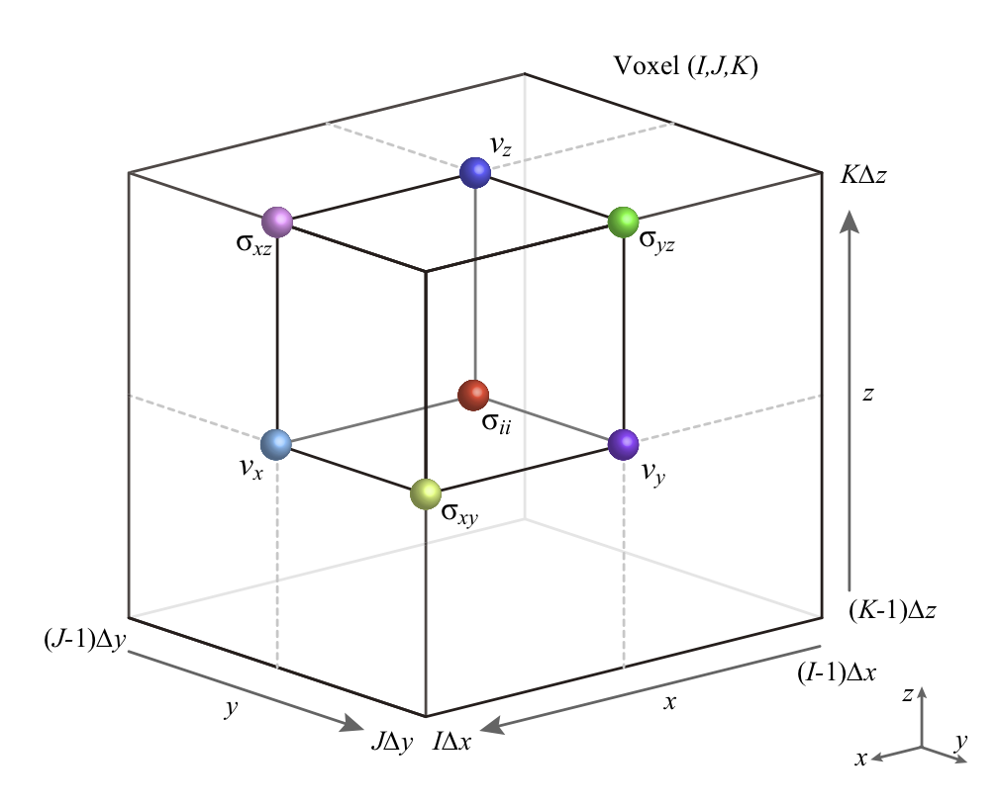

座標系と並列計算¶
OpenSWPC は3次元計算の場合は水平2次元分割を，2次元計算の場合には水平1次元分割を用いて並列計算を行う．
3次元計算の場合の空間MPI分割の様子を下図に示す．2次元計算の場合には，XZ (I-K)断面が利用される．
(a) ３次元空間のモデル分割の模式図．(b) 隣接ノード間の通信の模式図．（Modified from Maeda et al., 20131）．
本コードは，デフォルトではが北，が東，方向は下が正のカーテシアン座標系を取る．xbeg--xend, ybeg--yend, zbeg--zendの領域を，空間刻みdx, dy, dzで各方向nx, ny,
nz個のグリッドに離散化する．
水面がであることが想定されているため，地表境界条件を満たすためzbegは負の値から始めることが推奨される．
地理座標モデルに基づく計算ののために，中心緯度clon, clatを基準点として
Gauss-Krüger投影（Kawase et al., 2011 2）により計算座標系（デカルト座標系）の面を地理座標系に関連づける．具体的には以下のような手法により地理座標を取得する．
-
回転角phiとx,yのパラメタから，デカルト座標系における等間隔グリッド位置を生成する．
-
1.で生成したグリッド一つ一つの位置を，
clon,clatを中心位置としたGauss-Krüger変換によって緯度経度に変換する． -
各グリッド位置の緯度経度における標高ないしは境界面深さを，入力速度構造データから双3次補間によって推定する．
領域の指定範囲が入力構造ファイルの外にはみ出してしまった場合には，構造ファイルの最外側グリッドでの値が補外される．
地理座標系と計算座標系（水平断面）との関係．
スタガードグリッド¶
OpenSWPCは下図のようなスタガードグリッド配置を用いる．

3次元のスタガードグリッド配置．xbeg=ybeg=zbeg=0の場合．
図に含まれるグリッドが，プログラム上では同一の配列インデックス(I, J, K)をもつ．この単位4面体をセル，と呼ぶ．
あるが属するセル位置は
\begin{align}
I = \left \lceil \frac{ x-x_{\text{beg}} }{ \Delta x } \right \rceil,
\end{align}
で，逆にセル位置が与えられたときのセル中心の座標位置は
でそれぞれ与えられる．ただしは天井関数，は座標系のとる最小値であり，はセルに属するようにとられている．
範囲
で定義されるセルの中心に法線応力成分が，辺上に剪断応力成分が，そしてセル面上に速度成分がそれぞれ配置される．
密度・速度などの媒質定数はすべてセル中心 \begin{align} x_\text{beg} + (I-1/2) \Delta x, \quad y_\text{beg} + (J-1/2) \Delta y, \quad z_\text{beg} + (K-1/2) \Delta z \end{align} の位置で与える．計算中に適宜平均化操作が行われ，それぞれのグリッドでの媒質パラメタが評価される．
差分公式と安定条件と波長条件¶
OpenSWPCで採用したスタガードグリッド差分法では，運動方程式や構成関係式に現れる空間微分は空間4次精度の差分公式で近似される．例えば-方向の空間微分は，
と表される．ただしここでは差分演算の係数で，, である．
一方，時間微分は2次精度差分公式
が用いられる．
このスタガードグリッド差分法に基づく数値シミュレーションでは，空間グリッドサイズ , , と時間ステップ間隔 は，差分法の安定条件を満たさなければいけない．次元空間の，空間差分次数次の安定条件は
のように与えられる．
ここで は媒質中もっとも速い地震波速度，は差分演算の係数，は方向の空間グリッドサイズである． たとえば，3次元空間4次の差分法で，空間グリッドサイズが等方的（）な場合，この安定条件は
のように簡略化される．これは，直感的には『1時間ステップに地震波が伝播する距離は，空間グリッド間隔よりも（充分に）小さい』ことが要請されていると考えて良い．この条件が満たされないと，差分法による時間発展計算そのものが不安定になり，すぐさま発散してしまう．
安定条件に加え，地震波の波長よりも空間グリッドサイズが充分に小さい（1波長あたり5-10グリッド）ことも要求される．こちらの波長条件はたとえ満たされなくても計算そのものは実行可能であるが，波長あたりのグリッド数が足りない場合には，地震波速度が波長（あるいは周波数）に依存する数値分散現象が起こる．数値分散の結果，差分法によって計算される地震波の速度は常に仮定した速度より遅くなるため，この人工的な分散による後続波が現れてしまう．数値分散を避けるためには空間グリッドサイズを小さくする必要があるが，同時に，安定条件を満たすために時間ステップ間隔も小さくしなければならない．
これら安定条件と波長条件は，差分法プログラム実行開始時に標準エラー出力に
Stability Condition c および Wavelength Condition r
として表示される．それぞれ，安定条件と時間刻みの比および構造中の最小波長と空間グリッドサイズの比を意味している．前者は1より小さくなければ計算が実行できない．
これらの条件を満たすような適切なパラメタを設定するためのサポートツールが提供されている．特に3次元数値シミュレーションの場合には，メモリサイズにも十分注意を払う必要があるだろう．
Parameters
nproc_x,nproc_y- , 方向のMPI分割数．全並列数は
nproc_x * nproc_yになる．この全並列数が実行時にmpirun等で指定されるプロセス数と一致している必要がある．分割数は1でも良い．どちらも1の場合には事実上の非並列計算になる． nx,ny,nz- 空間次元各方向のグリッド数． なお，水平方向のグリッド数
nx,nyは必ずしもnproc_x,nproc_yの倍数でなくとも良い．余りが発生する場合には，端を担当するノードのグリッド数で自動的に調節される． dx,dy,dz- 空間グリッド間隔 [km]．全空間サイズは
nx * dxなどとなる．各方向のグリッドサイズは等しくなくとも良い． nt- 時間グリッド数．
dt- 時間グリッド間隔 [s]．全時間長は
nt * dtである． xbeg,ybeg,zbeg- 各空間方向の最小値．地図投影法上は，基準緯度経度が中心になるような値となっているのが最も歪みが少ない．
xbegとybegが省略された場合には，xbeg = - nx * dx / 2,ybeg = - ny * dy / 2と自動設定される．zbegが省略された場合には，K=30が地表面となるように自動設定される． tbeg- 時間の最小値．通常は0で良いが，特定の時刻から始めることもできる．
clon,clat- 座標系中心経度・中心緯度（度）．本座標位置を中心としたGauss-Krüger変換によって座標投影が行われる．
phi- 地理座標系に対する計算座標系の回転角度．
phi=0の場合は軸が北，軸が東を向いている．通常はゼロで良いが，斜めの座標系を用いることもできる．ただし，phiがゼロでない場合には，出力波形やスナップショットの,成分も角度がphiだけ傾いているので注意が必要である．
-
Maeda, T., Furumura, T., Noguchi, S., Takemura, S., Sakai, S., Shinohara, M., Iwai, K., & Lee, S.-J. (2013). Seismic and tsunami wave propagation of the 2011 Off the Pacific Coast of Tohoku Earthquake as inferred from the tsunami-coupled finite difference simulation, Bulletin of the Seismological Society of America, 103, 1456–1472, doi:10.1785/0120120118. (article link) ↩
-
Kawase, K. (2011), A general formula for calculating meridian arc length and its application to coordinate conversion in the Gauss-Krüger projection, Bulletin of the Geospatial Information Authority of Japan, 59, 1–13. (article link) ↩